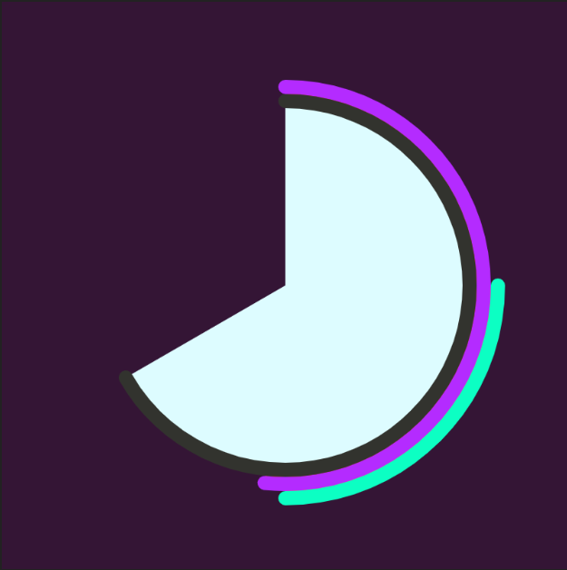
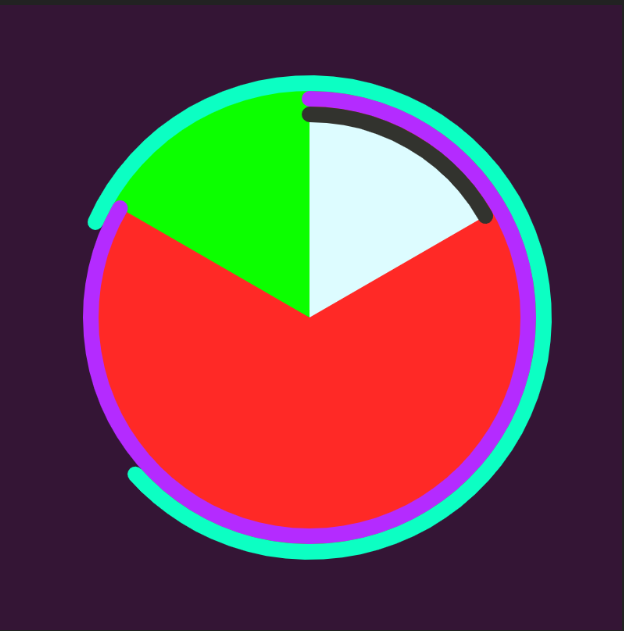
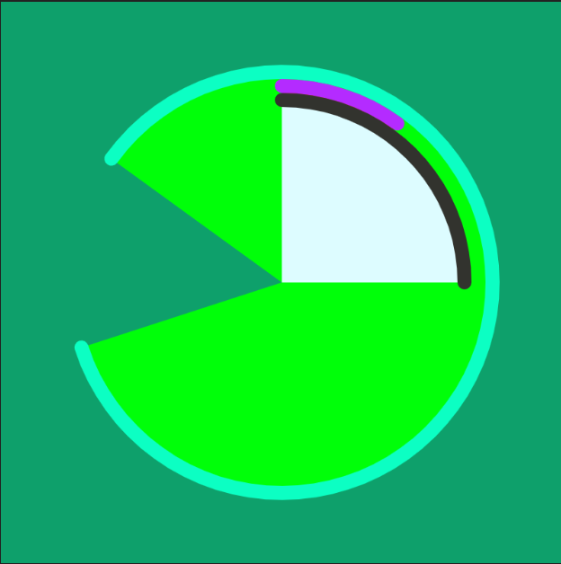
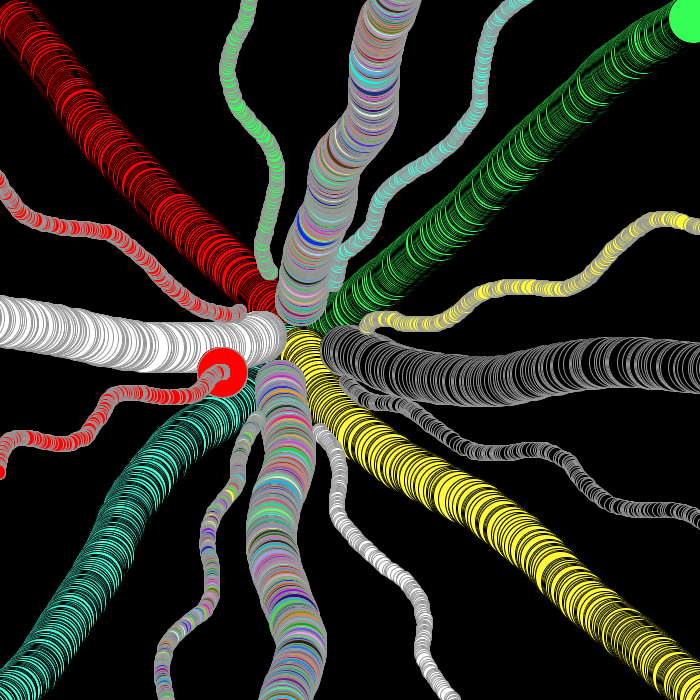
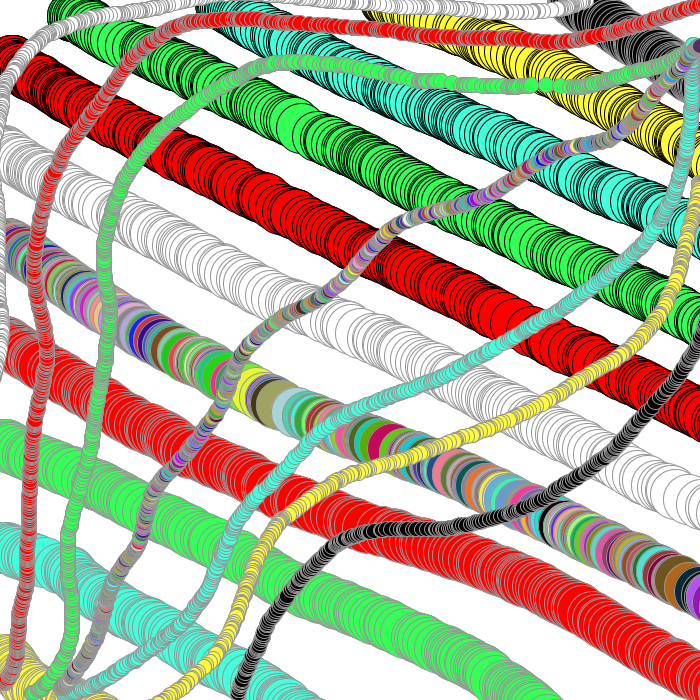

Juan Moreno Guzman - List of Works
{kind=link}
"Mega Red Helmet Alterations"
This was my first exercise where the goal was to combine both sketch 1 and 2. By seeing the outcomes of both sketches (sketch 1 produced a line display and sketch 2 a bunch of random circles) I decided to try and make squares follow a line while also changing color. Thanks to the loop statemnts I was able to achieve this and it turned out ok.
Click for bigger image"City Hall After Effects"
In this Exercise, we combined sketch 3 and 4. I had a bit of difficulty putting things together and figuring things out, but I eventually I produced this. The exercise is a kind of like a storm of squares with s movable image and when you press B you get a flash of light. This was achieved through the use of custom functions, move mouse commands, some if staments, and key press command.
play videop5 Clock
The overall clock was made through the use of arcs and other commands taught to us in class that keep track of time. The seconds bar is the cyan colored arc and its fill displays a different color with each passing second (achieved with colorMode). It begins small but it expands around the clock, once the arc connects, 60 seconds have gone by. The purple arc with a red fill displays minutes and the black arc with a white fill displays hours (their fill however, doesn’t change color.) During P.M hours a green turquoise color is displayed and during A.M hours a purple background is displayed. I was going to have them display different images but I had some issues with that.
Click here to see Clocksee code
 
8:30AM---AND---2:50AM

3:40PM---AND---5:35PM
Project 1
The ability to create art and then make it pop to generate more attention and make it look more elegant is something that I like doing. In this particular project I made different "if" and "else" statements to create the overlapping circles with a bit of stroke, to create a series of overlapping circles that look both elegant and pop out. The if and else staments are used for the key press commands so if you press 1 you get a rather large circle but if you press its letter below it "Q" you get a smaller version. The colors are red, blue yellow, green, black, white and rainbow (so key presses from 1 to 7). Also the ability to change background color to black can be achieved when "C" is pressed. The outcome of the drawings looks quite good and elegant to me.
see code
 